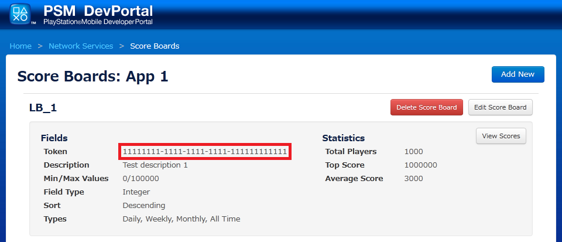

Contents
PSMスコアボードはPSM Netowrk APIを介してアクセスできます。この文書ではその実装と使用について説明しています。
スコアボードは、アプリケーションのトップユーザーをカテゴリに分けてリストに表示します。各スコアボードは通算したスコアをトラックし、各ユーザーの最高点のスコアを与えられたエントリーに記録します。更に、開発者はスコアボードの作成時に日間・週間・月間（どの値の組合せでも可）でスコアのトラッキングのサポートを設定することができます。 例として、開発者が日間のみのスコアのトラッキングを選択すると、選んだスコアボードに対して日間と通算のスコアボードが作成されます。
スコアボードAPIはフレンドのスコアボードを取り込み、PlayStation(R)Networkのフレンドリストにあるユーザーと比較することもできます。フレンドのスコアボードは通算のスコアボードから検索されます。
1つのPSM開発者アカウントで、1年に10個までネットワークを使うアプリケーションを作成することができます。各アプリケーションでは合計8のスコアボードを作ることができます。（各アプリケーションは日間・週間・月間・通算のスコアがトラックできます。）ユーザーがPSNにログインしてスコアボードのデータを送ったり読み込んだりするには、オンラインIDが必要になります。
スコアボードの作成は以下のフローになります。
- こちらからDevPortalにログインします。https://psm.playstation.net/portal/
- "PSNサービス設定"オプションをクリックします。
- "アプリケーションリスト"画面で"新規作成"ボタンをクリックして新規アプリケーションを追加します。

- "スコアボード"画面で"管理"ボタンをクリックします。

- "スコアボード一覧"画面で"新規作成"ボタンをクリックし、新規スコアボードを追加します。

アプリケーションとスコアボードが新規作成されると、固有のトークンがそれぞれ1つ与えられます。このトークンはスコアボードネットワークAPIにアクセスするときに使用するもので、開発者はアプリケーションに埋め込む必要があります。
重要：開発者はアプリケーションとスコアボードのトークンを秘密の鍵として扱い、開発チームの外では共有しないでください。
開発環境のスコアは"スコアボード一覧"画面で"スコアの表示"ボタンをクリックすると、DevPortalで閲覧することができます。Portalでは開発者がテストのデータセットをリセットできるように、スコアの削除を行うことができます。
開発者は各々の責任で、DevPortalを介して作成したアプリケーションもパブリッシュしてください。アプリケーションは"アプリケーションリスト"画面で"、パブリッシュ"ボタンをクリックするとパブリッシュされます。これによりアプリケーションとアプリケーションの全スコアボードが、QA環境に送られ最終申請されます。アプリケーションのパブリッシュはマスターパッケージを提出するときに行ってください。
重要：開発者はアプリケーションをパブリッシュするまでは、自由にアプリケーションとスコアボードを追加・削除することができます。パブリッシュ後は削除はできません。アプリケーションとスコアボードのフィールドの一部は、パブリッシュ後に変更を加えることができますが、スコアボードの名前、説明、最小値/最大値のスコアの範囲に限られます。スコアボードのフィールドの種類（integer）と時間設定（日間・週間・月間）は作成時の設定以降は変更できません。
スコアボードのプロセスはNetworkクラスを使用します。
- Call Network::Initialize with appToken.
- Call Call Network::AuthGetTicket().
- ワークフロー：
- ユーザーの承認情報はPSNより取得します。これにより、デバイスにユーザーのログイン情報が既に保存されていない限り、ユーザーはログインを促されます。ログインが成功すると、承認情報は検証のためにPSM Network Servicesサーバーへ送られます。問題がない場合は、サーバーはネットワークサービスチケットをアプリケーションに戻します。
- ネットワークサービスチケットを受信すると、Network.StateはNetworkState.NetworkServicesServerReadyとなります。
- その後Network Servicesサーバーに対してNetworkRequestsをすることができます。
全てのリクエストとレスポンスはJSONフォーマットで行います。開発を簡易化するためにレスポンスパーサーが使用されています。
"get" NetworkRequestを以下のパラメーターと"score_board"のサービスの種類と共に送ってください：
DevPortalから抽出されたアプリケーションのトークン

DevPortaから抽出されたスコアボードのトークン
スコアボードの種類のセット
- 有効な種類：
1: 日間 2: 週間 3: 月間 4: 通算
制限 - 有効な値は[50-500]（任意、デフォルト 50）の整数です。
整数のオフセット（任意）
NetworkResponseを、以下のパラメーターと共に受信します：
- ログイン中のユーザー名
- スコアボードの結果一覧 - 一覧のフォーマット： [score_board_token: {time_variant: [username, score, date achieved, metadata], ...}]
- ユーザーのランク
- 通算スコアの合計数
"set" NetworkRequestを、以下のパラメーターと"score_board"のサービスの種類と共に送ってください：
DevPortalから抽出されたアプリケーションのトークン
DevPortalから抽出されたスコアボードのトークン
ユーザーのスコア
スコアに関連するメタデータの一連
"get" NetworkRequestを、以下のパラーメーターと"friend_score_board"のサービスの種類と共に送ってください：
DevPortalから抽出されたアプリケーションのトークン
DevPortalから抽出されたスコアボードのトークン
フレンドスコアボードは一度に1つしかクエリーできません。
NetworkResponseを、以下のパラメーターと共に受信します：
- ログイン中のユーザー名
- スコアボードの結果一覧 - 一覧のフォーマット：[score_board_token: {time_variant: [username, score, date achieved, metadata], ...}]
"get" NetworkRequestを、以下のパラーメーターと"friend_list"のサービスの種類と共に送ってください。
NetworkResponseを、以下のパラメーターと共に受信します：
- ログイン中のユーザー名
- ログイン中のユーザーのPSNフレンドリスト
NetworkServerエラーはJSONレスポンスで送られます。
重要：スコアを送信時にデバイスがオフラインのときは、ネットワークがタイムアウトを伝えた後にアプリケーションが"例外"を受け取ります。このようにならないように、開発者がスコアをサーバーに送るときには非同期の送信を行うことを強く推奨します。また、スコアを送れずエラーになるときは、開発者の責任でスコアの送信を持続、完了してしてください。開発者はNetworkクラスのNetwork.Stateプロパティにて、デバイスのオンライン状況を確認することが出来ます。デバイスがネットワーク接続していればNetworkState.NetworkServicesServerReadyが戻され、接続されていなければNetworkState.NotConnectedが戻されます。